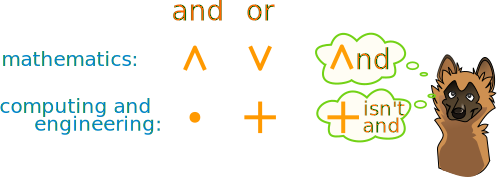
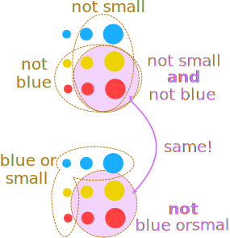
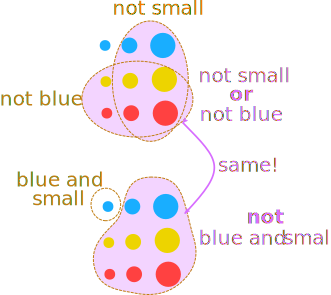

Boolean Algebra
Boolean Algebra is about true and false and logic.
Not
The simplest thing we can do is to "not" or "invert":
- not true is false
- not false is true
We can write this down in a "truth table" (we use T for true and F for false):
| A |
not A | |
|---|---|---|
| F | T | |
| T | F |
And
We can "and" two values together. Both must be true for the result to be true:
| A | B | A and B | |
|---|---|---|---|
| F | F | F | |
| F | T | F | |
| T | F | F | |
| T | T | T |
Example: If we cut the grass and wash the car we get ice cream!
| cut grass | wash car | ice cream | |
|---|---|---|---|
| F | F | F | |
| F | T | F | |
| T | F | F | |
| T | T | T |
Only if we do both jobs do we get ice cream
Or
We can "or" two values together. The result is true if either (or both) are true:
| A | B | A or B | |
|---|---|---|---|
| F | F | F | |
| F | T | T | |
| T | F | T | |
| T | T | T |
Example: If we cut the grass or wash the car we get ice cream!
| cut grass | wash car | ice cream | |
|---|---|---|---|
| F | F | F | |
| F | T | T | |
| T | F | T | |
| T | T | T |
In this case we can do either job (or both) to get ice cream. Let's wash the car.
Simplicity!
So we only have two possible values:
- true
- false
And only three basic operations:
- and
- or
- not
We can combine them to work out logical things. That's it.
And, Or, ...
In English we use the words loosely. We say "I like apples and pears", but in Logic that means you like them when they are together!
Remember that Logic says:
- and: must be both together
- or: can be either or both
Notation
But there are different ways of writing the same thing!
Here are different ways to write "not A":
A = ¬A = ~A = A'
And there are two main ways of writing "and" and "or":

You can choose which style you want by pressing this button:
| and: | · |
| or: | ＋ |
| (A and B) or C: | (A·B) ＋ C |
(Note: "dot plus" style has many similarities to multiply and add, whereas "up down" style has equivalents in set intersection ∩ and union ∪.)
Xor (eXclusive Or) ⊕
Xor is the same as or except is false when both inputs are true:
| A | B | A or B | A xor B | |
|---|---|---|---|---|
| F | F | F | F | |
| F | T | T | T | |
| T | F | T | T | |
| T | T | T | F |
We can have either one being true but not both.
Xor is like both your best friends fight. Life is fun with either one, but not both.
Think: "eXclusively yours" (no one else allowed).
Equivalence ≡
Only true when the inputs match (are equivalent):| A | B | A ≡ B | |
|---|---|---|---|
| F | F | T | |
| F | T | F | |
| T | F | F | |
| T | T | T |
It is also the opposite of xor.
Implication →
Is true except when A is true and B is false:
| A | B | A → B | |
|---|---|---|---|
| F | F | T | |
| F | T | T | |
| T | F | F | |
| T | T | T |
Example: Guard "A" checks your ticket "B"
- Without the Guard you can get in any time
- With the Guard you need a ticket to get in
So you can get in except when there is a Guard and you do not have a ticket.
All Together Now
Here they are together:
| and | or | xor | equiv | imply | |||
| A | B | A · B | A ＋ B | A ⊕ B | A ≡ B | A → B | |
|---|---|---|---|---|---|---|---|
| F | F | F | F | F | T | T | |
| F | T | F | T | T | F | T | |
| T | F | F | T | T | F | F | |
| T | T | T | T | F | T | T |
There are actually 16 possible combinations, but those are the most important.
Venn
This is how a Venn Diagram relates to a truth table:

Venn Diagram Regions
In the outer region both A and B are false
And we can do pretty Venn Diagrams to illustrate and, or, etc:
Laws
This is cool: assuming "and is multiply" and "or is add" we find Boolean Algebra shares these Laws of ordinary algebra:
Commutative Laws: we can swap values over in these cases:
A · B = B · A
A ＋ B = B ＋ A
Example: Boys' under-15 sprint.
You need to be a boy and under 15:
Boy and Under-15 is the same as Under-15 and Boy
Associative Laws: we can change, or remove, brackets in these cases:
A · (B · C) = (A · B) · C = A · B · C
A ＋ (B ＋ C) = (A ＋ B) ＋ C = A ＋ B ＋ C
Example: free burgers for students, parents or teachers!
These are all the same:
student or (parent or teacher)
(student or parent) or teacher
student or parent or teacher
Distribution of and over or:
A · (B ＋ C) = (A · B) ＋ (A · C)
Identity Laws: we get the original value back in these cases:A · true = A
A ＋ false = A
Double negation: one "not" cancels another "not" and we get the original value:
A = A

Saying "Do NOT not eat!" is the same as saying "Eat!"
The following laws are also true in Boolean Algebra, but not in ordinary algebra:
Distribution of or over and:
A ＋ (B · C) = (A ＋ B) · (A ＋ C)
Absorption Laws: we can "absorb" the term in parentheses in these two cases:
A · (A ＋ B) = A
A ＋ (A · B) = A
Why? Using Identity and Distribution Laws, let us look at the first case:
A · A = A
A ＋ A = A
A · = false
A ＋ = true
· =
＋ =
Let us look at each in turn:
· =
"not x and not y = not (x or y)"
Example: · =

Example: "I don't want mayo and I don't want ham"
Is the same as "I don't want (mayo or ham)"
And the other De Morgan rule:
＋ =
"not x or not y = not (x and y)"
Example: ＋ =

Example: "I don't want mayo or I don't want ham"
Is the same as "I don't want (mayo and ham)"
In other words not mayo and ham together, but either on its own is fine.
Example: Salad
You are making a salad. Your friend says "I only want what is not green or not small". What?
Let's decode that:
＋ =
which is actually the same as "not (green and small)"
In other words: not the olives.
Chaining
A series of "and"s compared to a series of "or"s"
- A and B and C and D and ... must all be true for the result to be true.
- A or B or C or D or ... must all be false for the result to be false.